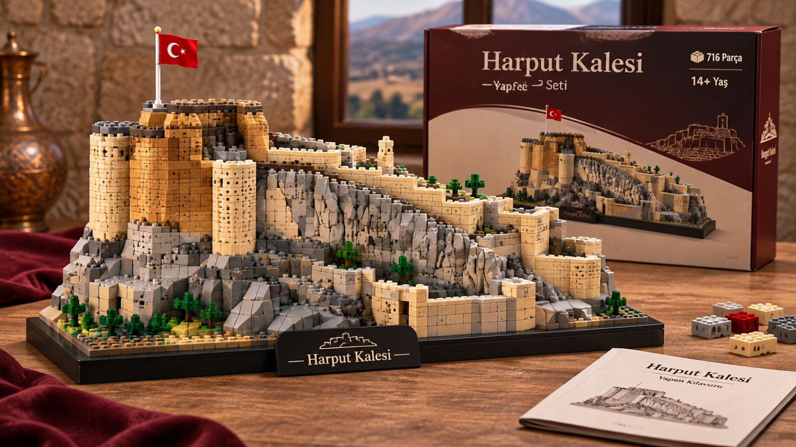

4K DETAY
716 Parça • 14+ Yaş

Harput Kalesi Legosu
Tarihi Süt Kalesi'ni sarp kayalıkları, burçları, Türk bayrağı ve özel isimlik kaidesiyle kendi ellerinizle inşa edebileceğiniz 716 parçalık koleksiyonluk yapım seti.
- Parça Sayısı: 716 Parça (14+ Yaş)
- Kutu İçeriği: Özel Stand + Yapım Kılavuzu
₺1.850